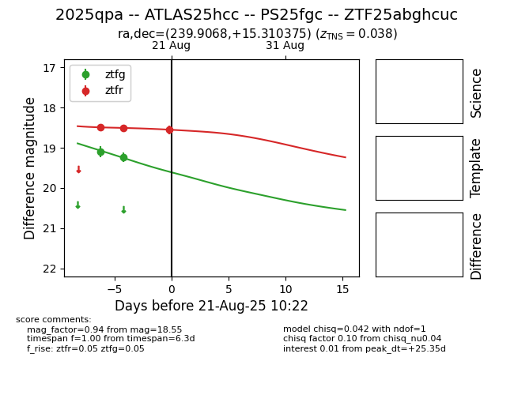

Target 2025qpa at 2025-08-22 18:06, see:
FINK: fink-portal.org/ZTF25abghcuc
Lasair: lasair-ztf.lsst.ac.uk/objects/ZTF25abghcuc
ALeRCE: alerce.online/object/ZTF25abghcuc
TNS: wis-tns.org/object/2025qpa
YSE: ziggy.ucolick.org/yse/transient_detail/2025qpa
alt names
ZTF25abghcuc (ztf,alerce)
2025qpa (tns,yse)
ATLAS25hcc (atlas)
PS25fgc (panstarrs)
coordinates:
equatorial (ra, dec) = (239.9068,+15.31037)
galactic (l, b) = (27.6971,+44.85473)
photometry
last atlaso=18.70, ps1::w=18.16, ztfg=19.23, ztfr=18.55
13 atlaso, 4 ps1::w, 2 ztfg, 3 ztfr detections
